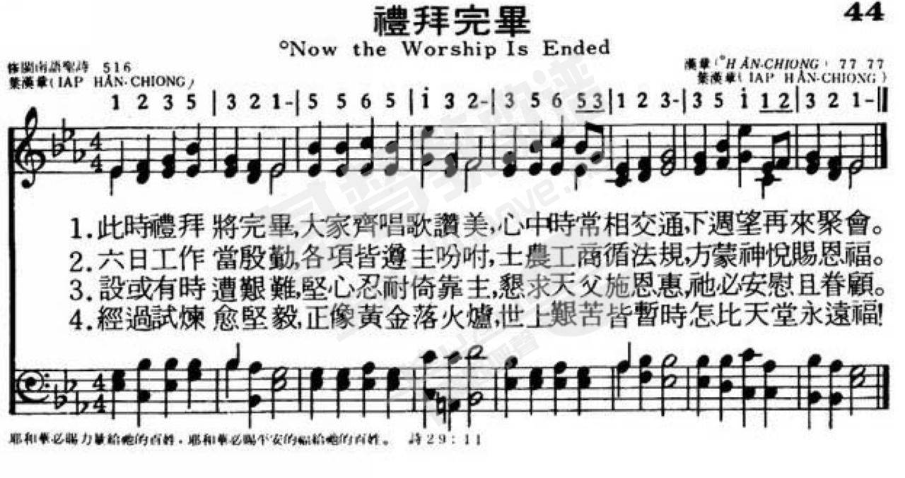
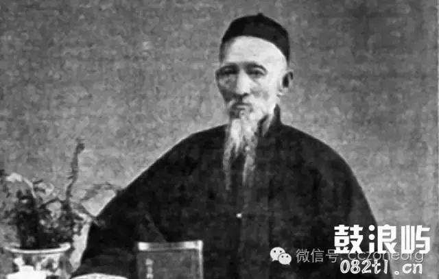

|
|
|
|
|
044礼拜完毕
1.此时礼拜完毕,大家齐唱歌赞美,
心中时常交通,下周望再来聚会. 2.六日工作当殷勤,各项皆遵主吩咐, 土农工商循法规,方蒙神悦赐恩福. 3.设或有时遭艰难,坚心忍耐倚靠主, 恳求天父施恩惠,祂必安慰且眷顾. 4.经过试炼愈坚毅,正像黄金落火炉, 世上艰苦皆暂时,怎比天堂永远福! |
|
https://www.mred365.cn/szxg/7047.html

|
|
|
|
|

LX1796
Now The Worship Is Ended
044
葉漢章 此時禮拜啲欲息
李景行撰 《台灣教會公報》 3084期 2011年 4月4-10 日 p.11
新《聖詩》394首〈此時禮拜啲欲息〉（Worship now is near end）源自廈門《養心神詩》，1964年編入《聖詩》516首，後編入新《聖詩》394首。
詞、曲作者為葉漢章（1832∼1912），廈門人，父親為木材商，店舖在美國歸正教會宣教師打馬字（Rev. John Van Nest Talmage）住宅隔壁。葉漢章自幼就聽到奇妙的福音，信主後立志作傳道。進神學院3年及實習事奉，31歲被按立牧師，是歸正教會最早設立的2名華人牧 師之一。牧會期間，他曾來台灣訪問並協助事工（詳見賴永祥教授著《教會史話》第三輯67∼69頁）。
這首詩特別為會眾在做完禮拜結束時吟唱。基督徒來教會做禮拜，得到身心靈的安歇，從上帝的話語重新得力之後，每天的生活需為主作見證；雖然有苦難、 試煉，但我們的信仰必須堅持到最後，才能得到永生的盼望。
葉漢章牧師的後裔孫輩中，有一位傑出的名聖樂家葉志明教授（David Yap Chi Beng），他是筆者的摯友，出身馬尼拉旅菲中華基督教會，留學美國獲得音樂碩士（M. Mus.），回來後在馬尼拉聯合教會（Union Church）擔任音樂部主任，並歷任東南亞聖樂促進會及世界華人基督教聖樂促進會的總幹事。
其夫人柳素華女士在菲律賓從事塑膠射出事業，並協助葉志明到處從事聖樂事奉。後來移居西澳洲伯斯（Perth），到目前為止，他除擔任「頌音詩歌基金公司」董事長製作聖詩伴唱帶外，並常到中國做聖樂培訓事工。
（作者為退休牧師，曾任新聖詩編輯小組召集人）
史話228 廈門葉漢章牧師
「此時禮拜將要息，大家吟詩可四散，心肝常常相交陪，盼望後期再聚會……」，共有4節，是為會眾做完禮拜結束時吟唱而作的（現行「聖詩」516首），作詩作曲老是葉漢章（1832-1912）。
葉漢章，於1832年3月29日生於廈門，父親是木材商，其古鋪正在美國歸正教會宣教師打馬字（Rev. John Van Nest Talmage，請參見《教會史話》 60）住宅隔壁，所以少年漢章就聽到異人所傳奇妙的故事，但父親一直反對所傳。不過1850年代，小刀會擾亂廈門地區，亂中葉家產業盡失，打馬字牧師乃提供住屋下層來安頓葉家。漢章先歸主，後全家入信。後來漢章立志作傳道，進神學3年及實地事奉，於1863年（時31歲）被選為廈門竹樹腳教會傳道人，翌年5月8日被按牧，是歸正教會最早設立的華人牧師2名之一。牧竹樹腳18年之后，於1883年轉牧小溪教會（位於寰門西南60哩，屬漳州府）。P. W. Pitcher牧師曾有一篇記念葉漢章任牧40年之文，有傳有相片，可資參考（題Rev. lap Han-cheong, for Forty Years a Pastor Amoy China，收於The Chinese Recorder, Vol.34, p.438-442. Sept. 1903）。1912年9日夏門中會成立50週年紀念會盛大理行。典禮本來定由葉牧師來主持，而葉牧師6月去世，仍改由議長Beattie主持。
我讀甘為霖牧師的報道（如Missionary Success......Vol.1, p.228-241；Sketch From Formosa, p.21-27），得悉葉漢章牧師曾來台訪問並協助事工。
1872年4月19日（據The Messenger, August 1872, p.184），甘為霖從台灣府前往打狗找李庥牧師，然后相偕訪問東港及竹仔腳教會，返打拘遇葉漢章自廈門來訪。乃於5日3日（據The Messenger, Oct 1872, p.230），甘、李、葉3位牧師相偕作巡迥教會的旅行，訪問了埤頭（鳳山）、阿里港、木柵、柑仔林、拔馬、岡仔林等。葉牧師用廈門音的講道，應用了他對信仰、風俗及聽眾需要的豐富知識，有力且有啟發性，使甘牧師不得不承認本地傳教確需要本地出身受過教育的人士來擔任始能克服傅教的障礙。
葉漢章牧師在《台灣府城教會報》第1-3期（光緒11年6-8月刊）撰論「白話字的利益」，同第18-23期（光緒12年12日~13年5月刊）撰「辦神主論」，均是頭名受選刊登之作，是代表台灣長老教會的立場，值得一讀。
